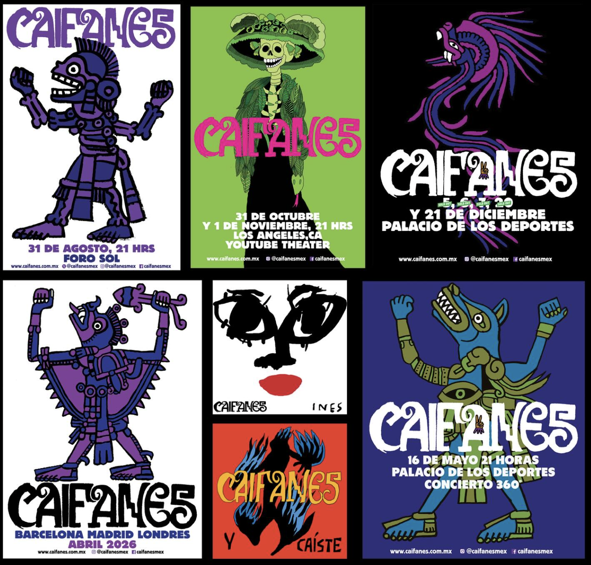
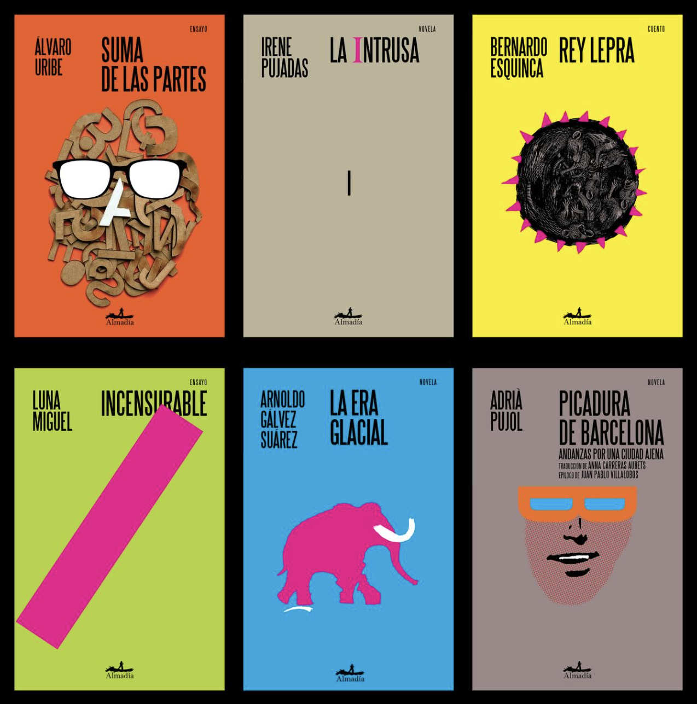
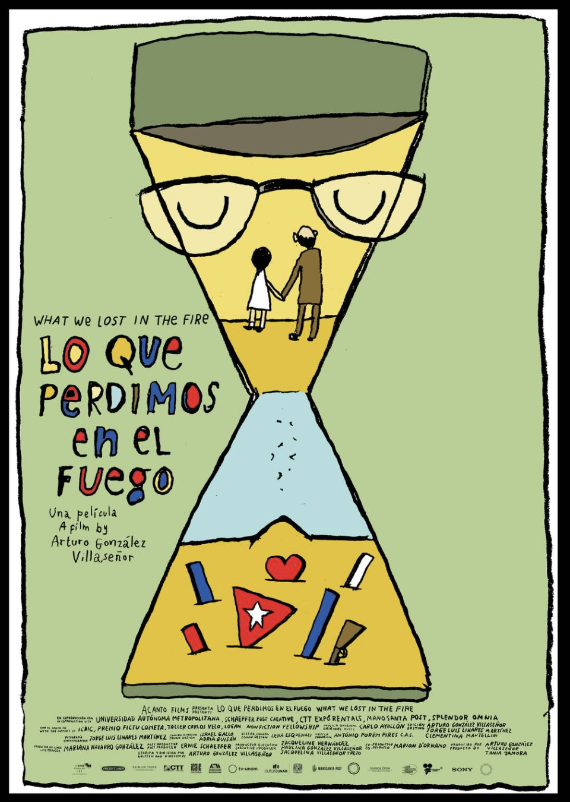
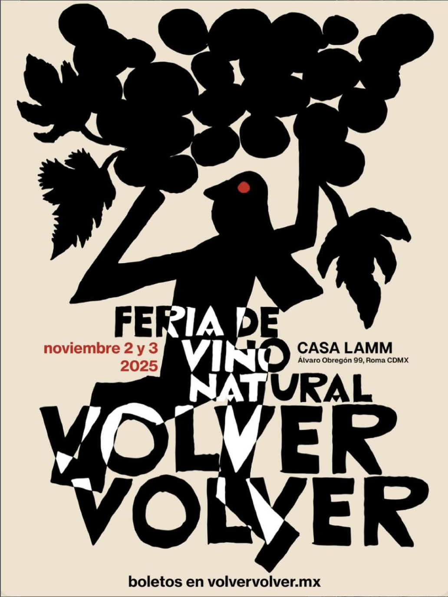
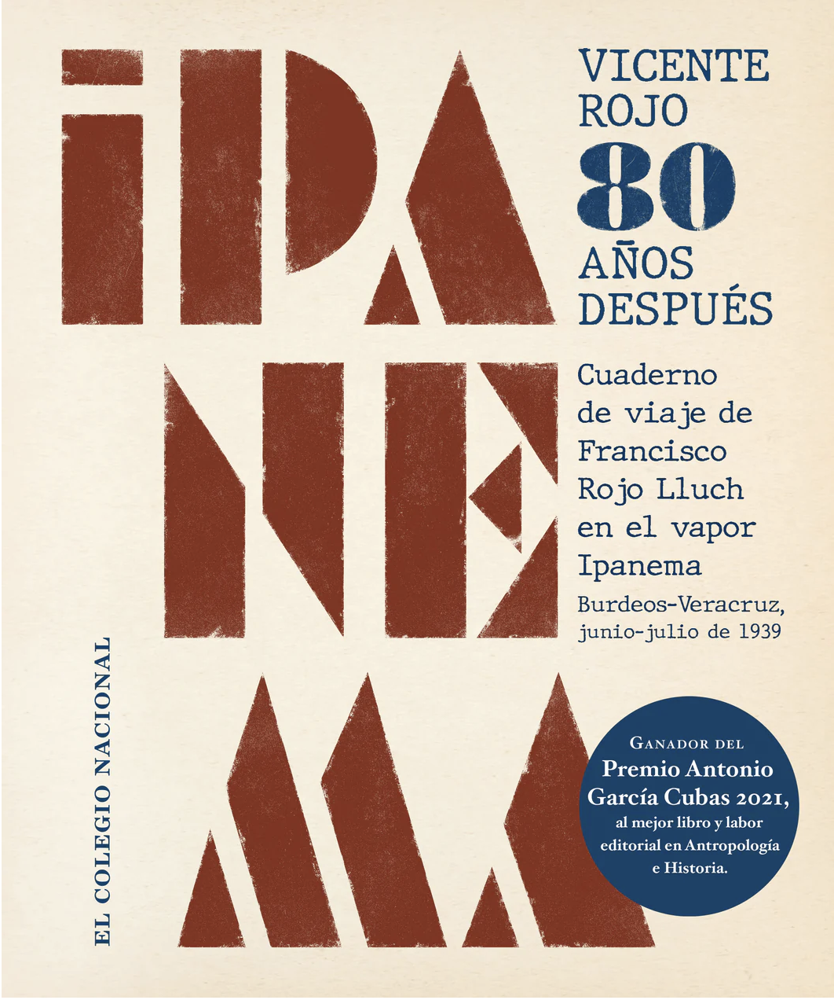
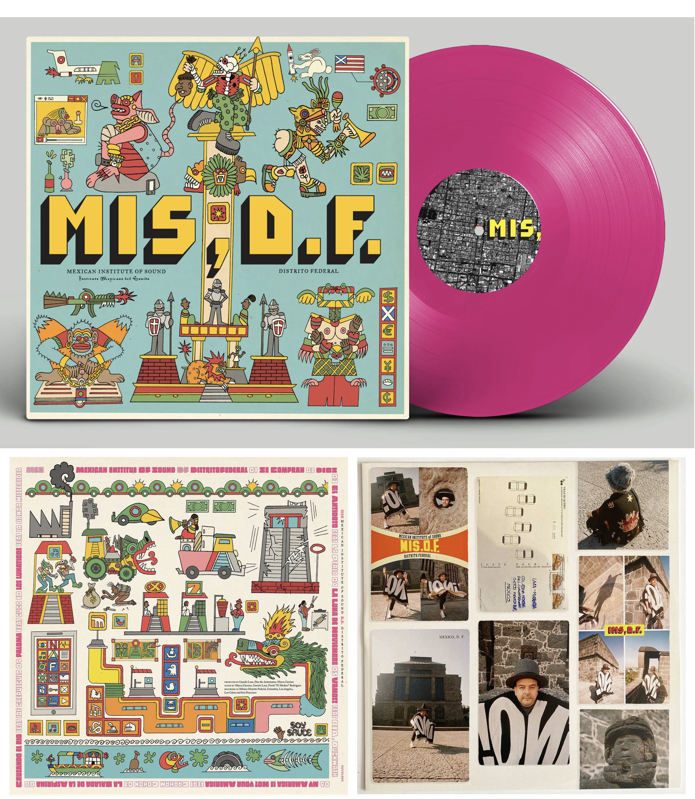
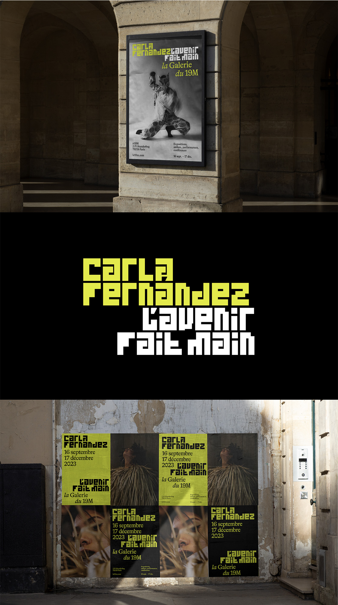
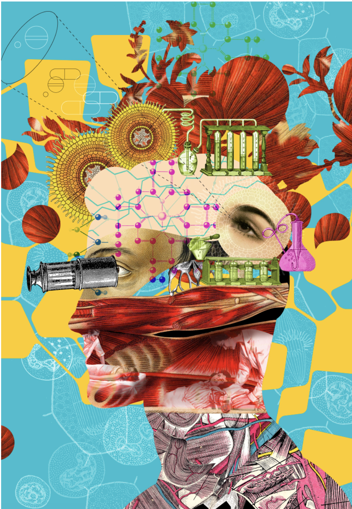

In the 2020s, graphic design continues to evolve through digital technologies and global connectivity. Designers combine traditional and digital methods while addressing social, political, and cultural issues. The boundaries between design, art, and media are increasingly fluid, and design plays an important role in shaping communication across different platforms.







